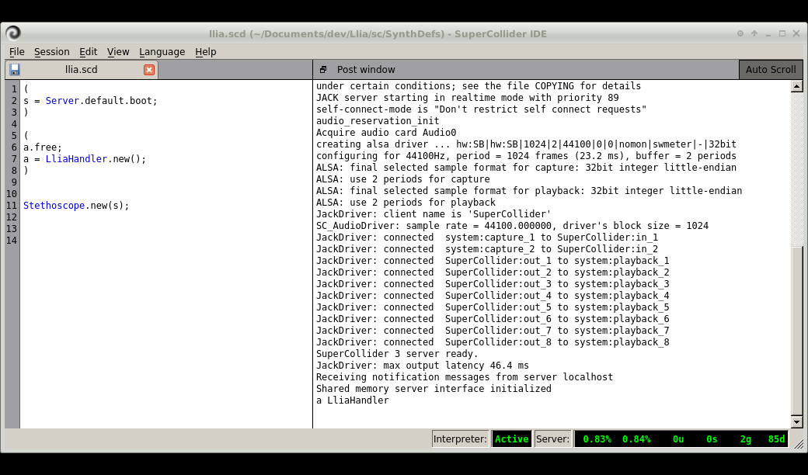
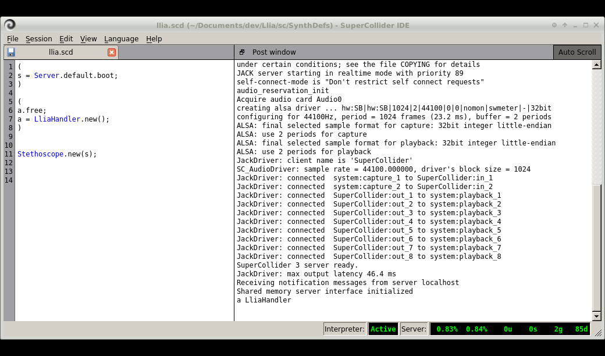
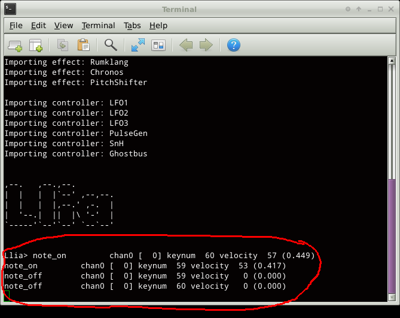
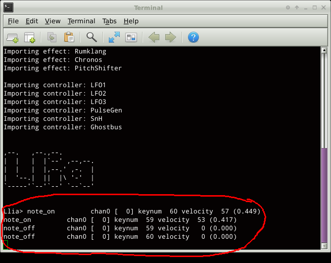

Quickstart Part 1
Application start and test
Previous( install ) Next( quickstart2 ) Home Contents
SuperCollider
- Start SuperCollider IDE
- Load file sc/SynthDefs/llia.scd

- Start SuperCollider server and LliaHandler
 

Llia Client Application
- Open terminal and navigate to the Llia project directory
- Start client app with "python llia/main.py"

After a few seconds you should see the Llia splash screen similar to the one below.

Llia is highly configurable and it may be configured to skip the above splash screen, or to not load a GUI sysmte at all. If a window appears but it is not the one above, or if no window at all appears try editing the configuration file.
Under the [GUI] section make sure the following two lines appear:
gui : tk
no-splash : False
In most cases the default values for OSC ID, host, client, and port numbers should be OK. What we're really interested in here is the selection of a MIDI input device.
- Select a MIDI input device and click "Continue"
MIDI output ports are included for future use, at the moment they are ignored.
After clicking Continue, the splash screen is replaced with the main Llia window. The exact appearance may differ from this image, particularly the large graphic buttons may be different or they may appear in a different order.

- Test OSC connection
The "Ping" option under the OSC menu is used for testing OSC communication. Clicking it transmits a Ping message to the Server which in turn responds with a PingResponse message back to the client. If all goes well the client status line displays "Ping OK".

The SuperCollider post window should also indicate that a Ping message has been received.
- Test MIDI Input
Test MIDI reception by clicking "Toggle MIDI Input Trace" under the MIDI menu. With trace enabled diagnostic messages appear in response to incoming MIDI messages. The trace output appears in the terminal window used to launch Llia.
 

Previous( install ) Next( quickstart2 ) Home Contents